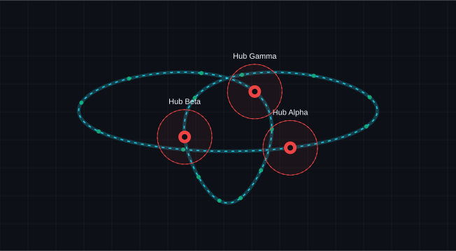

Conversation 67
3 node sphere graph trefoil pandemic biohazard 1.5 meter distance radius 3 x 3 = 9
Prompt 1 · You
3 node sphere graph trefoil pandemic biohazard 1.5 meter distance radius 3 x 3 = 9
Response 1 · Google AI Mode
Here is an interactive visualization mapping your requested concepts into a network simulation:
AI-generated. Don't enter sensitive personal info.
Concept Summary
- 3 Nodes & 3×3 Grid Space: Represents a minimal network matrix scaled across localized safety coordinates ().
- 1.5-Meter Safe Radius: Marks the biohazard containment zone around each node to visually represent social distancing dynamics.
- Trefoil Configuration: Arranges the nodes in a interconnected, looped structure mimicking molecular containment and epidemic transmission paths.
